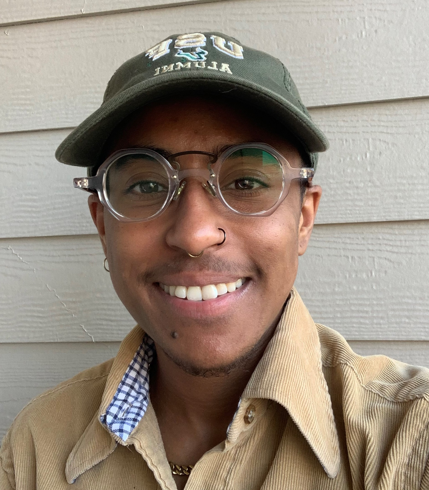

RESUME

OBJECTIVE
Dedicated to finding a role that allows me to merge my passion for product innovation and social impact, where I
can create transformative solutions that positively influence the lives of individuals. By emphasizing
accessibility, I strive to make these life-changing products accessible to all, regardless of their background
or circumstances.
WORK EXPERIENCE
Software Engineer II (Associate) | Plano, TX
JPMorgan Chase | February 2023 - Present
- Create and manage AWS resources such as EKS, SQS, and Aurora utilizing Terraform.
- Develop Java SpringBoot API calls along with unit tests and utilize Python with MagicMock to test access to
AWS services.
- Migrate on-premise cloud applications as well as data to AWS utilizing Glue jobs.
- Nominated for LEAP program within a month of becoming an associate.
Software Engineer I (SEP) | Plano, TX
JPMorgan Chase | July 2020 - February 2023
- Designed and developed 3 On-Demand Web reports that leverage JSP, Javascript, and SQL technologies to
extract and present data to over 100 merchants.
- Led the design and implementation of the IST Automation project, significantly reducing estimated sprint
points of IST from 13 to 3 and dramatically improving cost efficiency and product delivery speed.
- Spearheaded the successful completion and launch of over 20 projects.
- Served as interim Business Analyst for 3 months, providing guidance to my sprint team in epic discovery,
estimations, story creation, assignment, and deliverable tracking while simultaneously fulfilling developer
responsibilities.
- Won 3rd place in JPMC Hackathon for Learning Journey, a REACT web application that allowed teams to make
modular documentation tailored to each team.
- Led SEP resource group for black (Black BELT) and queer (QuEP) identities and actively participated in
various volunteer opportunities including Code for Good, Girls Who Code, WE Hack, and Pride.
Applications Developer I | Tampa, FL
Rightpath | October 2017 – May 2020
- Designed, developed, and maintained full-stack C# applications and created and maintained SQL databases.
- Provided IT support to clients and built comprehensive IT manuals as well as grant materials for research
funding.
- Developed and implemented cost-saving offline data entry solutions saving over $1000.
Director of Public Relations | Tampa, FL
Residence Hall Association (RHA) - USF | April 2017- May 2018
- Organized and hosted campus-wide events for more than 100 students.
- Conducted weekly RHA general assemblies for over 50 attendees, led PR meetings, and taught classes in Adobe
CC.
- Designed logos, flyers, advertisements, T-shirt designs, and a yearbook.
EDUCATION
B.S in Computer Science | University of South Florida
B.A in Women’s and Gender Studies | University of South Florida
- Organizations: RHA, American Society of Civil Engineering (ASCE), Honors College Orchestra and Jazz Band,
Triota (WGS Honors Society)
- Awards: USF Scholars Gold Award, USF History of Achievement Award, Florida Bright Futures Scholarship
SKILLS & LANGUAGES
Skills:
SQL, Python, Java, JSP, Springboot, AWS, Terraform, EKS, C++, C, Debugging, Troubleshooting, Microsoft Office,
Adobe Creative Suite
Languages:
English, Spanish